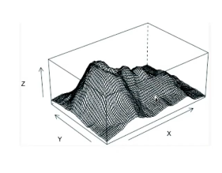
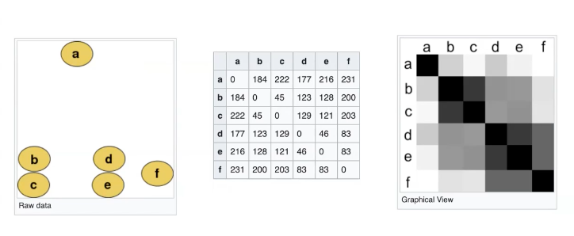

Hva gjør man når man har (for) mange variabler?
Utelate noen variabler
Representere noen av variablene med farger
Benytte seg av visualiseringer
Tre variabler - bruk av 'grid'
Et rute-nett kan være til hjelp, når man skal finne ut om hvordan funksjonen varier over en flate

Bildet ovenfor er en visualisering av 3-dimensjonale objekter
Små multilper - kjennetegner
Bruker mindre plass på merking av aksene
Har ikke muligheten til å studere små detaljer
Mer fokus på 'det større bilder'
Avstandsmatrise (distance matrix)
Beregner en avstand mellom to objekter basert på attributtverdiene
Diagonalen representerer avstanden et objekt har til seg selv (0)

Cluster - analyse
Cluster: en samling objekter som har en form for likhet
Ønsker ofte å se etter likhet/ulikhet mellom objekter i samme cluster